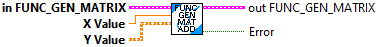

Insert new X, Y pair into an existing Function Generator Matrix data cluster.
Inputs:
- Input Funct Gen Matrix -- Data cluster
- X Value -- New X value
- Y Value -- New Y matrix
Outputs:
- Function Generator Matrix -- Updated data cluster
- Error -- Set true if an error occured. This is set when the size of the Y matrix does not match the definiton of this function generator.
Calculate the output Y value for the provided X. This is done by interpolating through an array of X and Y pairs. The pairs must be ordered in increasing X value. (The Add function ensures that the X values are sorted properly.)
Inputs:
- Function_Generator Matrix -- function generator data structure
- Input Value -- The input value.
Outputs:
- Output Value -- Output matrix calcuated from the input value.

Function generator matrix ( Interpolating Tree Maps) are used to get values at points that are not defined by making a guess from points that are defined. This uses linear interpolation. This type returns a Y matrix as a function of a provided double X value.
Inputs:
-- Rows -- Number of rows in the Y matrix
-- Columns -- Number of columns in the Y matrix.
Outputs:
- Function Generator Matrix -- Created data cluster